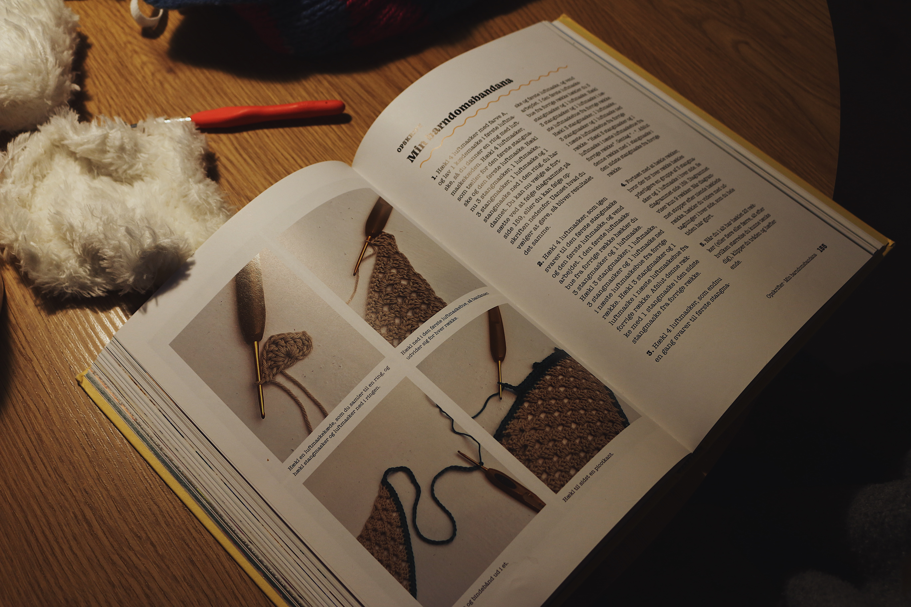
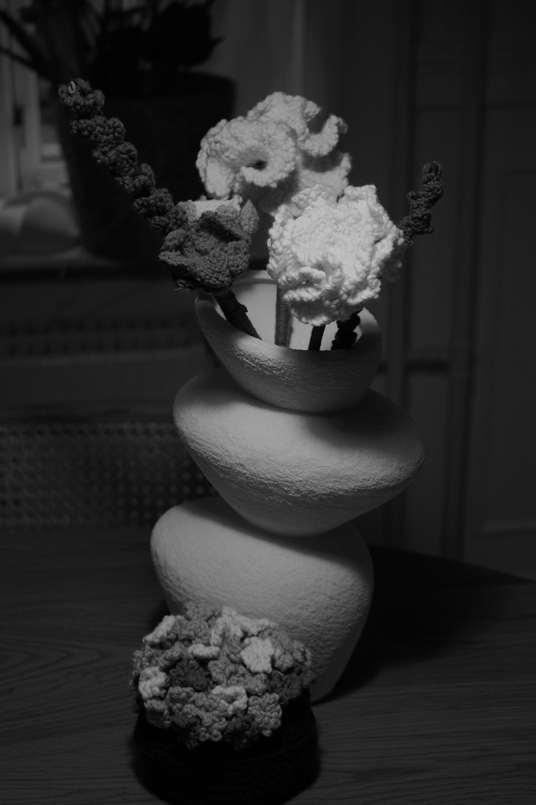
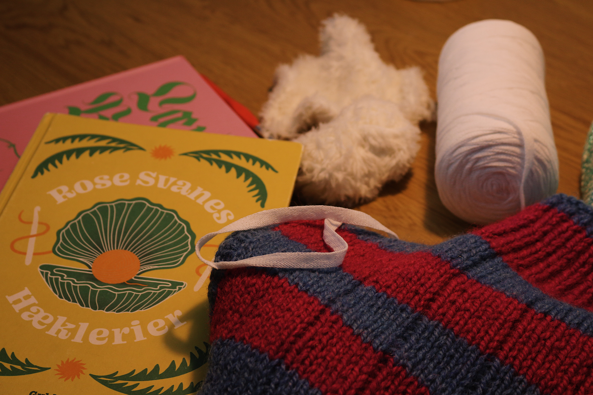
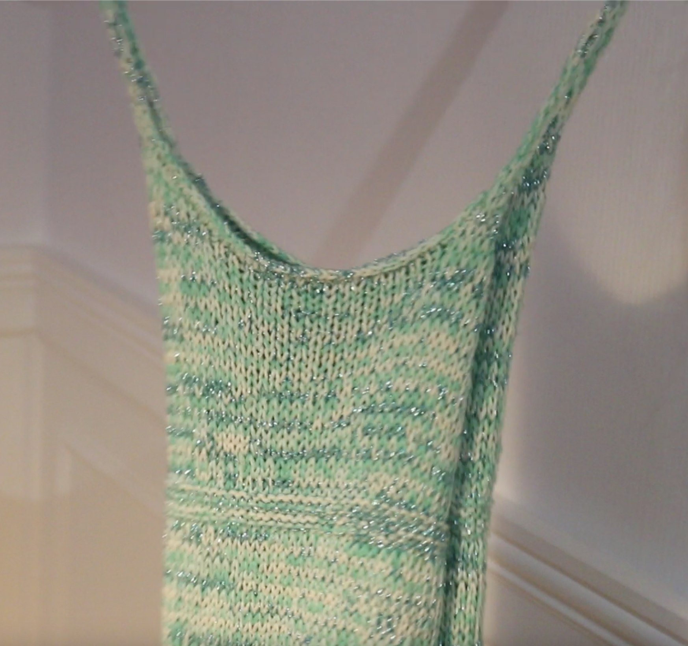
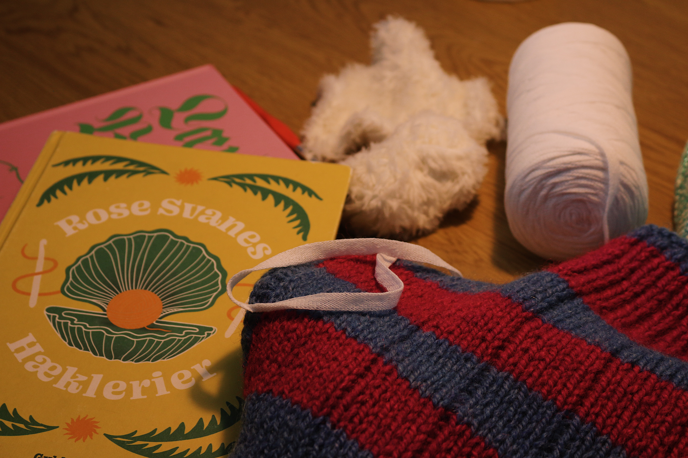
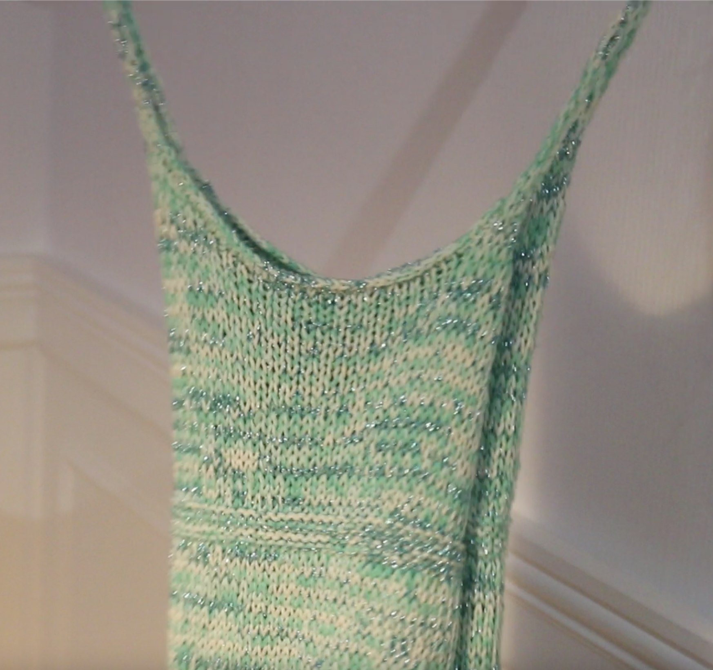
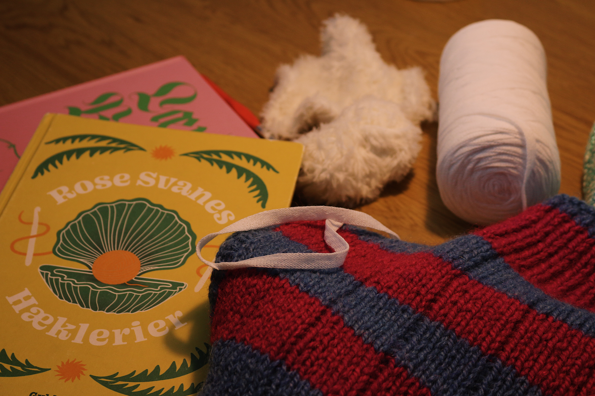
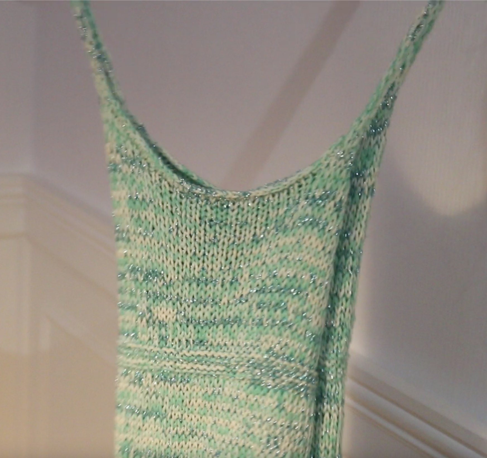

Ida strikker
Ida har passion for at strikke og hækle
Dette site er dedikeret til Ida og hendes passion for strik og hækling. Under corona opdagede Ida glæden ved at udfolde sin kreativitet gennem garn, og siden da har hun skabt og solgt adskillige unikke værker. For Ida er strik og hækling ikke kun en hobby, men også en måde at finde ro og dyrke sin kreative side på.
Her ses en side fra Rose Svanes hæklebog ”Rose Svanes Hæklerier”. Rose er en stor inspirationskilde for Ida i hendes passion for strik og hækling.
Billeder af Idas værker samt inspiration

 




